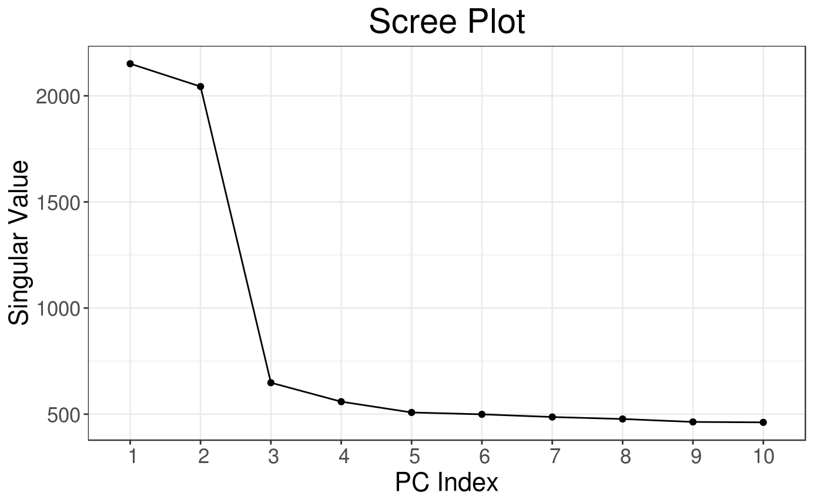
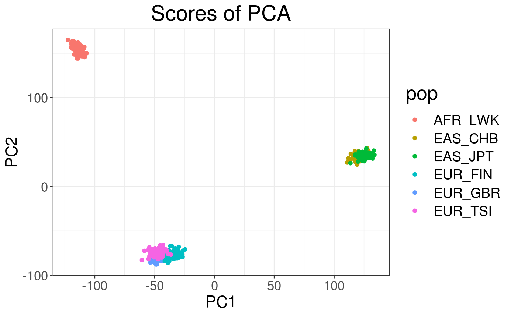
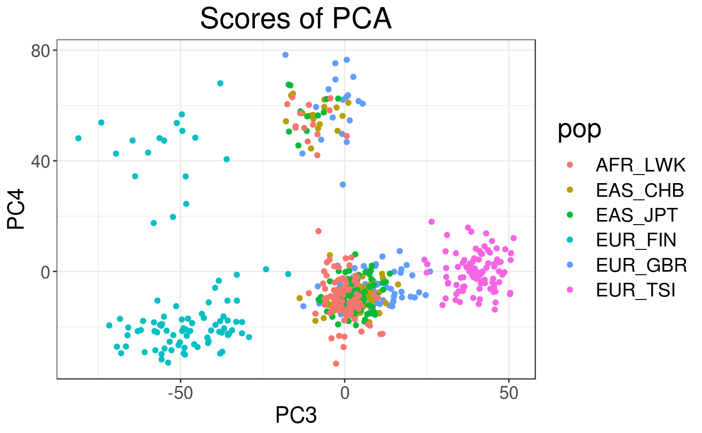
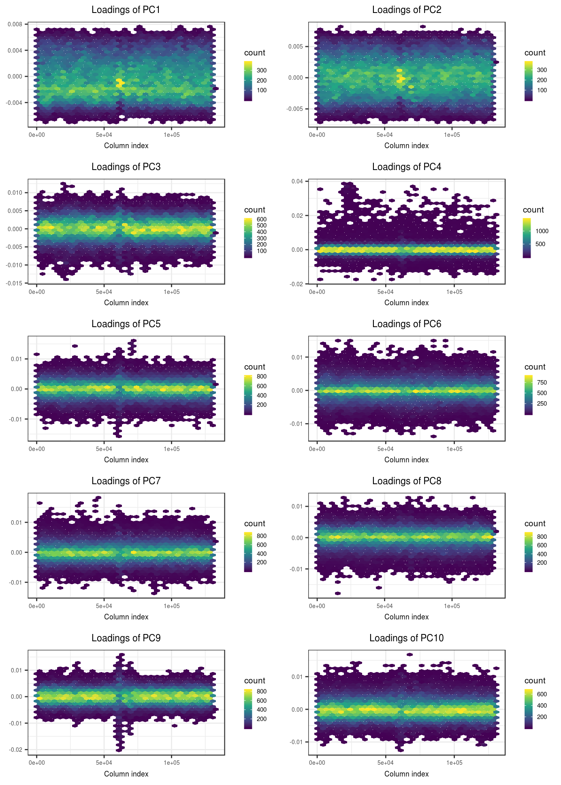
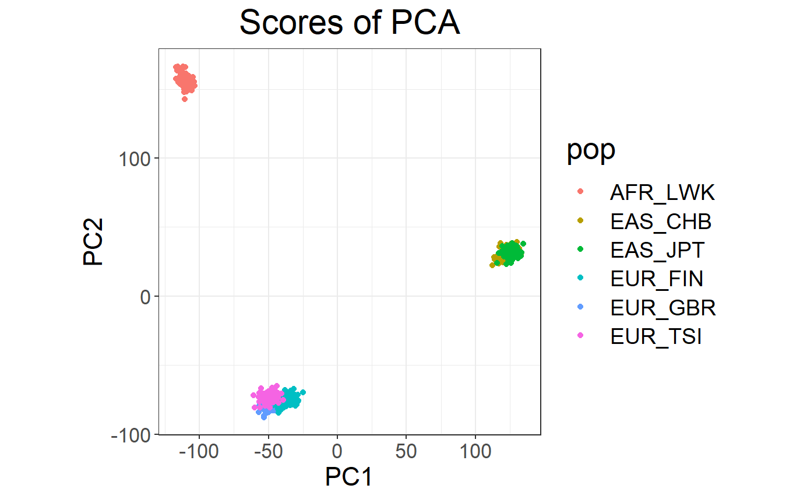
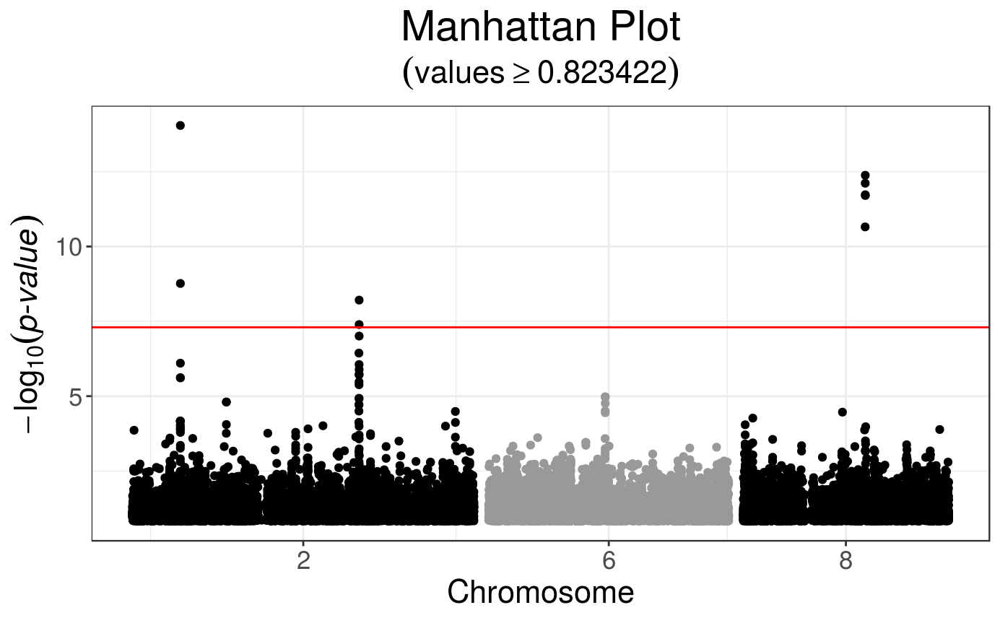
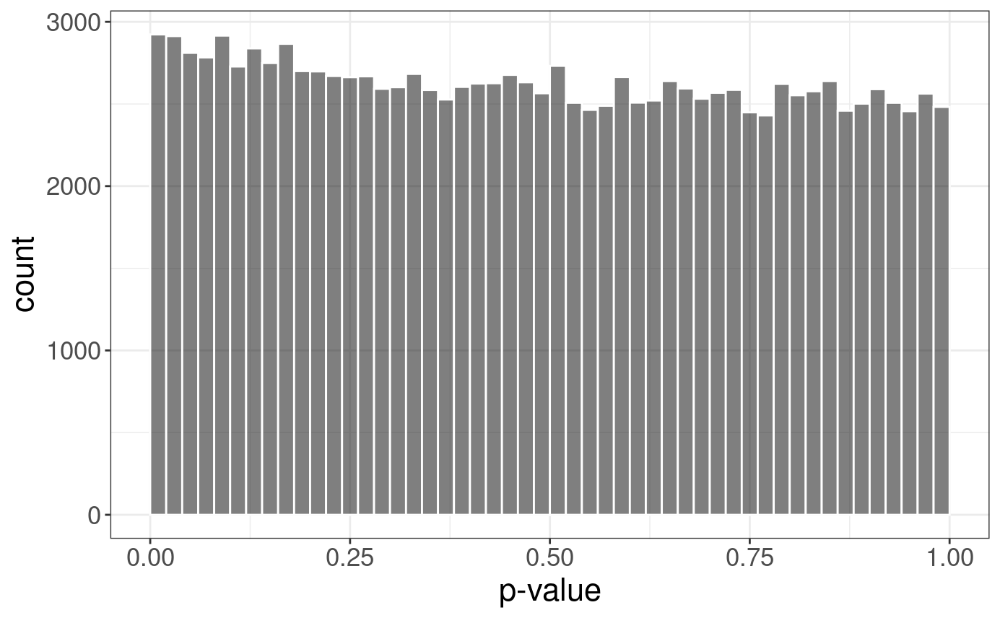

exo.RmdIn this document, I show how to use some of the features of packages {bigsnpr} and {bigstatsr}. Note that many functions used here come from package {bigstatsr} and could therefore be used on other data encoded as matrix-like (outside of the field of genotype data).
Download data and unzip files. I store those files in a directory called "tmp-data" here.
You can see there how I generated these data from the 1000 Genomes project.
# Load packages bigsnpr and bigstatsr
library(bigsnpr)## Le chargement a nécessité le package : bigstatsr# Read from bed/bim/fam, it will create new files.
snp_readBed("tmp-data/public-data.bed")## [1] "/home/privef/Bureau/bigsnpr/vignettes/tmp-data/public-data.rds"# Attach the "bigSNP" object in R session
obj.bigSNP <- snp_attach("tmp-data/public-data.rds")
# See how it looks like
str(obj.bigSNP, max.level = 2, strict.width = "cut")## List of 3
## $ genotypes:Reference class 'FBM.code256' [package "bigstatsr"] with 10 ..
## ..and 24 methods, of which 10 are possibly relevant:
## .. add_columns, as.FBM, bm, bm.desc, copy#envRefClass, initialize,
## .. initialize#FBM, save, show#envRefClass, show#FBM
## $ fam :'data.frame': 559 obs. of 6 variables:
## ..$ family.ID : chr [1:559] "EUR_GBR" "EUR_GBR" "EUR_GBR" "EUR_GBR" ...
## ..$ sample.ID : chr [1:559] "HG00096" "HG00097" "HG00099" "HG00100" ...
## ..$ paternal.ID: int [1:559] 0 0 0 0 0 0 0 0 0 0 ...
## ..$ maternal.ID: int [1:559] 0 0 0 0 0 0 0 0 0 0 ...
## ..$ sex : int [1:559] 1 2 2 2 1 2 1 2 2 1 ...
## ..$ affection : int [1:559] 0 0 1 0 1 1 1 1 0 1 ...
## $ map :'data.frame': 130619 obs. of 6 variables:
## ..$ chromosome : int [1:130619] 2 2 2 2 2 2 2 2 2 2 ...
## ..$ marker.ID : chr [1:130619] "rs28469191" "rs6548219" "rs4522651" "..
## ..$ genetic.dist: int [1:130619] 0 0 0 0 0 0 0 0 0 0 ...
## ..$ physical.pos: int [1:130619] 29970 30762 34049 38733 41054 47648 52..
## ..$ allele1 : chr [1:130619] "C" "A" "A" "G" ...
## ..$ allele2 : chr [1:130619] "T" "G" "G" "GA" ...
## - attr(*, "class")= chr "bigSNP"# Get aliases for useful slots
G <- obj.bigSNP$genotypes
CHR <- obj.bigSNP$map$chromosome
POS <- obj.bigSNP$map$physical.pos
y <- obj.bigSNP$fam$affection
sex <- obj.bigSNP$fam$sex
pop <- obj.bigSNP$fam$family.ID
NCORES <- nb_cores()
# Check some counts for the 10 first SNPs
big_counts(G, ind.col = 1:10)## [,1] [,2] [,3] [,4] [,5] [,6] [,7] [,8] [,9] [,10]
## 0 374 335 453 378 492 483 479 483 479 469
## 1 142 178 85 138 62 69 70 69 71 78
## 2 43 46 21 43 5 7 10 7 9 12
## <NA> 0 0 0 0 0 0 0 0 0 0You need to
Explore the data
Assess population structure of the data
Find the variables associated with the disease status (y)
Predict the disease status using the following indices as training/test sets:
For this, you can use whatever tools you want because the data is quite small. In the following section, I give some (scalable) solutions using using packages {bigstatsr} and {bigsnpr}.
Let us compute first principal components of the scaled genotype matrix:
# Compute partial SVD (10 PCs by default) using random projections
# big_scale() computes means and standard deviations for scaling
svd <- big_randomSVD(G, big_scale(), ncores = NCORES)# Scree plot
plot(svd)


# Loadings (effects of each variable for each PC)
plot(svd, type = "loadings", loadings = 1:10, coeff = 0.4)
Looking at the loadings, we can see that the PCA captures some variation due to large correlation between variables. To learn more about this possible pitfall, please look at this vignette.
# Association of each variable of `G` with `y` (adjusting for 10 PCs)
gwas <- big_univLogReg(G, y, covar.train = svd$u, ncores = NCORES)## For 1 columns, IRLS didn't converge; `glm` was used instead.# Histogram of p-values
plot(gwas)## Warning: Removed 117557 rows containing missing values (geom_point).
# Manhattan plot
snp_manhattan(gwas, CHR, POS, npoints = 20e3) +
geom_hline(yintercept = -log10(5e-8), color = "red")
\[\arg\!\min_{\beta_0,~\beta}(\lambda, \alpha)\left\{ \underbrace{ -\sum_{i=1}^n \left( y_i \log\left(p_i\right) + (1 - y_i) \log\left(1 - p_i\right) \right) }_\text{Loss function} + \underbrace{ \lambda \left((1-\alpha)\frac{1}{2}\|\beta\|_2^2 + \alpha \|\beta\|_1\right) }_\text{Penalization} \right\}\]
where
\(p_i=1/\left(1+\exp\left(-(\beta_0 + x_i^T\beta)\right)\right)\)
\(x\) is denoting the genotypes and covariables (e.g. principal components),
\(y\) is the disease status we want to predict,
\(\lambda\) is a regularization parameter that needs to be determined and
\(\alpha\) determines relative parts of the regularization \(0 \le \alpha \le 1\).
If you want to learn more about our implementation of PLR, please look at this paper.
# Penalized logistic regression for many alphas and lambdas
mod <- big_spLogReg(G, y[ind.train], ind.train, covar.train = svd$u[ind.train, ],
K = 5, alphas = 10^(-(0:4)), ncores = NCORES)# Plot regularization paths (from high lambda to low lambda)
# for each validation set (color) and each alpha (facet)
plot(mod)
# Get summaries of models
summary(mod)## # A tibble: 5 x 6
## alpha validation_loss intercept beta nb_var message
## <dbl> <dbl> <dbl> <list> <int> <list>
## 1 0.0001 0.552 -1.56 <dbl [130,629]> 57869 <chr [5]>
## 2 0.001 0.533 -3.09 <dbl [130,629]> 12255 <chr [5]>
## 3 0.01 0.486 -4.61 <dbl [130,629]> 2156 <chr [5]>
## 4 0.1 0.452 -3.52 <dbl [130,629]> 775 <chr [5]>
## 5 1 0.434 -3.24 <dbl [130,629]> 367 <chr [5]># Get the predictions for the test set
pred <- predict(mod, G, ind.test, covar.row = svd$u[ind.test, ])
# Assess the Area Under the ROC Curve
AUC(pred, y[ind.test])## [1] 0.8294991